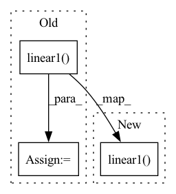

Pattern ID :4154
Before Change
a Tensor of output data. We can use Modules defined in the constructor as
well as arbitrary operators on Tensors.
h_relu = self.linear1( x) .clamp(min=0)
y_pred = self.linear2(h_relu)
return y_pred
After Change
a Tensor of output data. We can use Modules defined in the constructor as
well as arbitrary operators on Tensors.
return self.linear2(F.relu(self.linear1( x) ))
// N is batch size; D_in is input dimension;In pattern: SUPERPATTERN
Frequency: 3
Non-data size: 3
Instances Fragment ID: 15342687
Project Name: zzy979/pytorch-tutorial
Commit Name: efd8527c62fb51d4361428d2e7b6471f244a8dec
Time: 2020-09-29
Author: 979481894@qq.com
File Name: beginner/two_layer_net.py
M Class Name: TwoLayerNet
N Class Name: TwoLayerNet
M Method Name: forward(2)
N Method Name: forward(2)
M Parent Class: nn.Module
N Parent Class: nn.Module
M File Name: beginner/two_layer_net.py
N File Name: beginner/two_layer_net.py
M Start Line: 24
M End Line: 26
N Start Line: 25
N End Line: 25
Before Change
src, attn_weights = self.self_attn(query=src, key=src, value=src, key_padding_mask=mask, need_weights=return_attn_weights)
src = src + self.dropout(src) //Currently all the dropouts happen with the same probability
src = self.norm1(src)
src = self.activation(self.linear1( src) )
src = self.dropout(src)
src = self.linear2(src)
src = src + self.dropout(src)
src = self.norm2(src)
return src, attn_weightsAfter Change
src1, attn_weights = self.self_attn(query=src, key=src, value=src, key_padding_mask=mask, need_weights=return_attn_weights)
src = src + self.dropout(src1) //Currently all the dropouts happen with the same probability
src = self.norm1(src)
src1 = self.linear2(self.dropout(self.activation(self.linear1( src) )))
src = src + self.dropout(src1)
src = self.norm2(src)
return src, attn_weights Fragment ID: 15342691
Project Name: declare-lab/identifiable-transformers
Commit Name: ebf05c284863c9c768c36ed551063a73d0d45f05
Time: 2021-07-07
Author: rishabhbhardwaj15@gmail.com
File Name: model_identifiable.py
M Class Name: TransformerEncoderLayer
N Class Name: TransformerEncoderLayer
M Method Name: forward(4)
N Method Name: forward(4)
M Parent Class: nn.TransformerEncoderLayer
N Parent Class: nn.TransformerEncoderLayer
M File Name: model_identifiable.py
N File Name: model_identifiable.py
M Start Line: 100
M End Line: 106
N Start Line: 100
N End Line: 104
Before Change
// [batch, length, d_model]
x = x.reshape(-1, x.size(1) // self.chunk, x.size(2))
// [batch * chunk, length // chunk, d_model]
output = F.gelu(self.linear1( x) )
// [batch * chunk, length // chunk, d_ff]
if self.training:
output = deterministic_dropout(output, seed, dropout=self.dropout)
// [batch * chunk, length // chunk, d_ff]
output = self.linear2(output)
// [batch * chunk, length // chunk, d_model]
output = output.reshape(-1, output.size(1) * self.chunk, output.size(2))
// [batch, length, d_model]
return output
After Change
// [batch, length, d_model]
chunks = torch.chunk(input_tensor, chunks=self.chunk, dim=1)
// [batch, length // chunk, d_model]
output = [F.gelu(self.linear1( chunk) ) for chunk in chunks]
// [batch, length // chunk, d_ff]
if self.training:
output = [
Fragment ID: 15342689
Project Name: rick-mccoy/reformer-pytorch
Commit Name: 2329ebf0b795c0c005a71d3573236e9a6475bc98
Time: 2020-02-02
Author: rickmccoy3141@gmail.com
File Name: model/feedforward.py
M Class Name: ChunkFeedForward
N Class Name: ChunkFeedForward
M Method Name: forward(3)
N Method Name: forward(3)
M Parent Class: nn.Module
N Parent Class: nn.Module
M File Name: model/feedforward.py
N File Name: model/feedforward.py
M Start Line: 16
M End Line: 26
N Start Line: 17
N End Line: 28